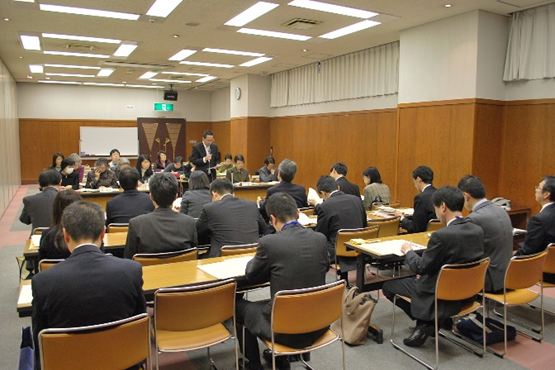

|
|
第52回埼玉県消費者大会実行委員会 12月2日(金)13:30より、埼玉教育会館202会議室にて、埼玉県と第52回埼玉県消費者大会実行委員会との懇談会が開催されました。埼玉県から25人、実行委員会から19人(14団体、事務局)が出席し、要請書から抜粋した各項目について埼玉県より口頭回答があり、回答を受けて、要請項目の理解を深める発言や、質疑応答を行いました。  1．あいさつ ＜埼玉県県民生活部消費生活課山本 好志課長＞ 今年の消費者大会でも、様々な問題について話し合われたと聞いています。本日は、この懇談の中から埼玉県の施策として、1つでも2つでも取り入れることができれば良いと思っています。向かっている方向は同じだと思っていますので、県民が豊かにくらせる埼玉県にしていきたいと思います。 ＜第52回埼玉県消費者大会川上 豊子実行委員長＞ 第52回埼玉県消費者大会を実施するにあたり、埼玉県より様々なご支援をいただいたことに感謝いたします。今大会の要請書は、4月から始まり6回にわたる実行委員会の中で、私たちをとりまく社会情勢を学習しながら、創り上げてきたものです。憲法をくらしに活かし、良いくらしを作っていくために、一緒に考えていきたいと思います。 2．要請書について概要説明（岩岡 宏保 大会事務局長） 大会基調報告内容から要請の要因となるくらしの背景・社会情勢をもとに、前半｢平和・核兵器廃絶｣｢消費者課題｣｢食・食の安全｣、後半｢医療・福祉｣｢環境・くらし全般｣｢教育・子育て｣｢復興支援・防災・減災｣について説明しました。 3．埼玉県の回答 岩岡事務局長の概要説明後、要請事項の抜粋した16項目について、担当課からの口頭回答がありました。 4．質疑応答 埼玉県からの回答を受けて、要請項目についての理解を更に深めるために、消費者大会実行委員会の参加者から7項目(平和・消費・食・福祉・医療・くらし・教育)について発言を行いました。 |